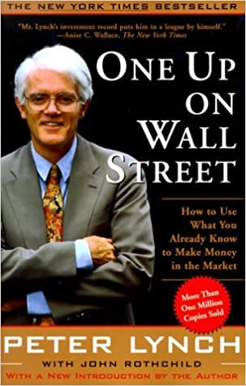
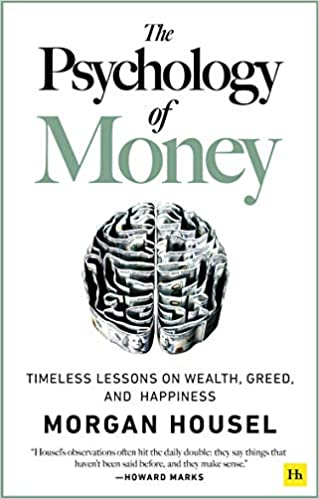
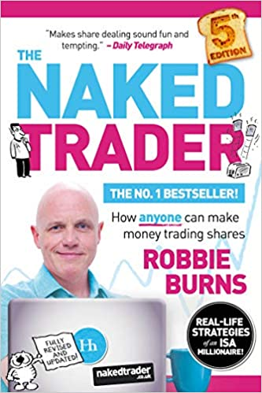
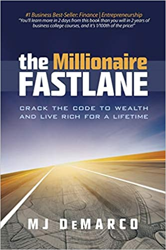

Below you will find a list of recommended books that will get you started with everything you need to know on empowering yourself financially and gaining the freedom to retire early. The books below may outline different philospies and some may present counter arguments but that is a good way to learn more about a subject.
One Up On wall Street by Peter Lynch

Fig. 1 - "One Up On Wall Street" book cover
Peter Lynch is a wall street legend. He is one of the most successful professional money managers of all time. He ran Fidelity's Magellan mutual fund between 1977 and 1990 and during his tenure the fund averaged an annual return of 29.2%, consistently beating the S&P Index by 2 times. This book is written for retail investors and outlines his approach to investing in a very common sense way. BUY NOW
Rich Dad Poor Dad by Robert T. Kiyosaki
Fig. 2 - "Rich Dad Poor Dad" Book Cover
Robert Kiyosaki, author of Rich Dad Poor Dad - the international runaway bestseller that has held a top spot on the New York Times bestsellers list for over six years - is an investor, entrepreneur and educator whose perspectives on money and investing fly in the face of conventional wisdom. He has, virtually single-handedly, challenged and changed the way tens of millions, around the world, think about money.In communicating his point of view on why 'old' advice - get a good job, save money, get out of debt, invest for the long term, and diversify - is 'bad' (both obsolete and flawed) advice, Robert has earned a reputation for straight talk, irreverence and courage.Rich Dad Poor Dad ranks as the longest-running bestseller on all four of the lists that report to Publisher's Weekly - The New York Times, Business Week, The Wall Street Journal and USA Today - and was named "USA Today's #1 Money Book" two years in a row. It is the third longest-running 'how-to' best seller of all time. BUY NOW
The Psychology of Money by Morgan Housel
`

Fig. 3 - "The Psychology of Money" Book Cover
The Psychology of Money is one of those books the Financial Market industry has been waiting for. Having read virtually all the literature on Risk Psychology, Investor Psychology, Behavioural Finance and the Emotional Aspects of Finance, I feel this book brilliantly knits together so many of the themes expressed in books from these fields, expressing them in a simple to read and crucially, enjoyable format. Housel has taken Occam’s Razor to ideas and theories which people so often want to over-complexify. The beauty of this book is how Housel manages to effectively bring topics and themes together, which may seem complex externally, and weld them into a single compelling narrative replete with fascinating insights and anecdotes. – Who knew that of Warren Buffett’s 500 or so investments in his career, just 10 or so accounted for virtually all his gains. BUY NOW
The Naked Trader by Robbie Burns

Fig. 4 - "The Naked Trader" Book Cover
This is an excellent book about playing the stock market. I'm a complete novice and this book explains what to do and the mindset you need in an easy to read and fun style. It's totally jargon free. Where there are "technical" terms, these are explained in a lucid way. The only minor issue I have is that the quiz at the end of the book does appear to contain a couple of errors that may affect the result you receive. However, this is a very minor quibble and takes little away from what is essentially a share trading guide for dummies.BUY NOW
The Millionaire Fastlane by MJ DeMarco

Fig. 5 - "The Millionaire Fast Lane" Book Cover
Former founder and CEO of Limos.com, multimillionaire entrepreneur, author, and the revolutionary "get rich slow" anti-guru, MJ DeMarco not long ago lived with his mother, mopped floors, and sought the dream like so many others-the dream to live free from bosses, free from 9-to-5 jobs and alarm clocks, and free from a life of mediocrity. Through rigorous years of self-study, countless errors and failures, MJ cracked the code to wealth and shockingly discovered that it had nothing to do with jobs, 401(k)s, mutual funds, or penny-pinching your life away for forty years. By rejecting society's preordained "settle-for-less" financial roadmap, MJ was able to retire young-in his thirties-without sacrificing lifestyle. (Yes, he drinks Starbucks coffee, drives exotic cars, and hasn't canceled the movie channels.) He lives in beautiful Phoenix, Arizona, and enjoys traveling, dining, writing, softball, fitness, working out, and obviously has a fanatical passion for the Lamborghini marquee. BUY NOW